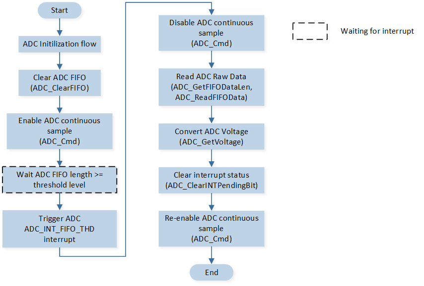
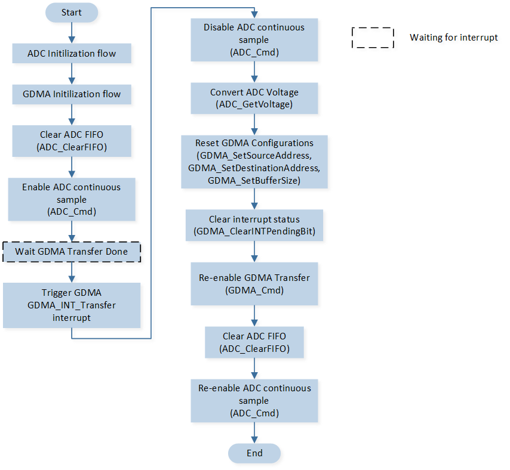

Continuous Mode
该示例通过使用 ADC 连续采样模式进行电压检测，示例中还可以通过修改配置用于控制是否使用 GDMA 进行数据搬运。
在连续采样模式下，ADC 的采样数据默认存放在 ADC FIFO 中。若使用 GDMA 搬运功能，GDMA 将数据从 ADC FIFO 搬运至内存中。
用户可以通过不同的宏配置改变示例中 ADC 通道的采样模式，输入电压范围等信息，具体宏配置详见 配置选项。
环境需求
该示例的环境需求，可参考 环境需求。
硬件连线
使用杜邦线短接 P2_4 和外部输入电压。
配置选项
可配置如下宏修改是否使用 GDMA 搬运 ADC FIFO 数据。
1表示使用 GDMA，0表示不使用 GDMA。#define ADC_CONFIG_GDMA_MODE_EN 0 /*< Set this macro to configure whether to use GDMA for transferring ADC FIFO data. */
可配置如下宏修改 ADC 输入电压范围。
#define ADC_DIVIDE_MODE 1 /*< Divide Mode, input voltage range is 0V~Vbat. */ #define ADC_BYPASS_MODE 0 /*< Bypass Mode, input voltage range is 0V~0.9V. */ #define ADC_MODE_DIVIDE_OR_BYPASS ADC_DIVIDE_MODE /*< Set this macro to select the ADC input voltage range. */
可配置如下宏修改引脚定义。
#define ADC_SAMPLE_PIN_0 P2_4 #define ADC_SAMPLE_CHANNEL_0 ADC_Channel_Index_4
可配置如下宏修改 GDMA 通道相关配置。
// Set the following macros to modify the ADC GDMA Channel configurations. #define ADC_GDMA_CHANNEL_NUM 0 #define ADC_GDMA_Channel GDMA_Channel0 #define ADC_GDMA_Channel_IRQn GDMA0_Channel0_IRQn #define ADC_GDMA_Channel_Handler GDMA0_Channel0_Handler
可配置如下宏修改 ADC GDMA 数据传输长度。
#define GDMA_TRANSFER_SIZE 100 /*< Set this macro to modify the transfer size. */
可配置如下宏修改 ADC 连续采样模式的采样时间。
#define ADC_CONTINUOUS_SAMPLE_PERIOD (200-1)//20us /*< Set this macro to modify the ADC sample period. */
编译和下载
该示例的编译和下载流程，可参考 编译和下载。
测试验证
EVB 启动后，在 Debug Analyzer 工具内观察 log。
Start ADC Continuous Mode test !
ADC 初始化配置：
若
ADC_MODE_DIVIDE_OR_BYPASS配置为ADC_DIVIDE_MODE，则会打印如下 log：[ADC]ADC sample mode is divide mode !
若
ADC_MODE_DIVIDE_OR_BYPASS配置为ADC_BYPASS_MODE，则会打印如下 log：[ADC]ADC sample mode is bypass mode !
初始化完成后 ADC 开始采样。当 ADC FIFO 内数据达到阈值时，会触发 ADC 中断。当 GDMA 搬运的数据达到设定值时，会触发 GDMA 中断。在中断函数内打印采样得到的 raw data 和转换后的电压值。
[io_adc]io_adc_voltage_calculate: ADC rawdata_0 = xxx, voltage_0 = xxxmV [io_adc]io_adc_voltage_calculate: ADC rawdata_1 = xxx, voltage_1 = xxxmV ...
若 ADC FIFO 溢出，则会触发
ADC_INT_FIFO_OVERFLOW中断，log 打印相关信息。ADC_INT_FIFO_OVERFLOW如果 ADC FIFO 为空时读取数据，则会触发
ADC_INT_FIFO_RD_ERR中断，log 打印相关信息。ADC_INT_FIFO_RD_ERR
代码介绍
该章节主要介绍示例中的初始化和相应功能实现的代码和流程说明。
源码路径
工程文件和源码路径如下：
工程路径:
sdk\samples\peripheral\adc\continuous_gdma\proj源码路径:
sdk\samples\peripheral\adc\continuous_gdma\src
初始化
外设的初始化流程可参考 General Introduction 中的 初始化流程 部分。
调用
Pad_Config()与Pinmux_Config()，配置对应引脚的 PAD 和 PINMUX。注意需要配置 PAD 为 Shutdown 模式，防止漏电。void board_adc_init(void) { Pad_Config(ADC_SAMPLE_PIN_0, PAD_SW_MODE, PAD_NOT_PWRON, PAD_PULL_NONE, PAD_OUT_DISABLE, PAD_OUT_LOW); }
调用
RCC_PeriphClockCmd()，开启 ADC 时钟。对 ADC 外设进行初始化：
定义
ADC_InitTypeDef类型ADC_InitStruct，调用ADC_StructInit()将ADC_InitStruct预填默认值。根据需求修改
ADC_InitStruct参数，当ADC_CONFIG_GDMA_MODE_EN配置为不同值时，初始化配置会有所不同。ADC 的初始化参数配置如下表。调用
ADC_Init()，初始化 ADC 外设。
ADC Hardware Parameters |
Setting in the |
|
|
|---|---|---|---|
Sample Time |
199 |
199 |
|
Schedule Index |
Index 0 is set to |
Index 0 is set to |
|
Bit Map |
0x01 |
0x01 |
|
Data Write to FIFO |
|||
ADC Water Level |
- |
4 |
|
FIFO Threshold Level |
16 |
- |
|
Power Always On |
若
ADC_MODE_DIVIDE_OR_BYPASS配置为ADC_BYPASS_MODE，需要调用函数ADC_BypassCmd()开启对应引脚的 Bypass 模式。调用
ADC_INTConfig()，配置 ADC 中断和 NVIC。NVIC 相关配置可参考 中断配置。若
ADC_CONFIG_GDMA_MODE_EN配置为0，配置 ADC FIFO 达到阈值中断ADC_INT_FIFO_THD。若
ADC_CONFIG_GDMA_MODE_EN配置为1，配置 ADC FIFO 溢出中断ADC_INT_FIFO_OVERFLOW和 ADC FIFO 读错误中断ADC_INT_FIFO_RD_ERR。
在 ADC 开始采样前，必须调用
ADC_CalibrationInit进行 ADC 电压校准。若返回值为 false，则代表该 IC 未经校验，无法正确转换电压值，但仍可读到 raw data。若
ADC_CONFIG_GDMA_MODE_EN配置为1，则需要初始化 GDMA 外设：定义
GDMA_InitTypeDef类型GDMA_InitStruct，调用GDMA_StructInit()将GDMA_InitStruct预填默认值。根据需求修改
GDMA_InitStruct参数。GDMA 通道的初始化参数配置如下表。调用GDMA_Init()，初始化 GDMA 外设。配置 GDMA 总传输完成中断
GDMA_INT_Transfer和 NVIC。NVIC 相关配置可参考 中断配置。调用
GDMA_Cmd()使能对应 GDMA 通道传输。
GDMA Hardware Parameters |
Setting in the |
GDMA Channel |
|---|---|---|
Channel Num |
0 |
|
Transfer Direction |
||
Buffer Size |
100 |
|
Source Address Increment or Decrement |
||
Destination Address Increment or Decrement |
||
Source Data Size |
||
Destination Data Size |
||
Source Burst Transaction Length |
||
Destination Burst Transaction Length |
||
Source Address |
|
|
Destination Address |
|
|
Source Handshake |
功能实现
ADC 采样数据不使用 GDMA 搬运
当 ADC 采样数据不使用 GDMA 搬运时，连续模式采样的流程如图所示：
{kind=link}

ADC 连续采样流程图（不使用 GDMA 搬运数据）
在 ADC 采样前调用
ADC_ClearFIFO()清空 ADC FIFO 内数据。调用
ADC_Cmd()，开始 ADC 连续采样。当 FIFO 中的采样数据达到设定的阈值时，触发 ADC
ADC_INT_FIFO_THD中断，在中断函数内调用ADC_GetFIFODataLen()读取 FIFO 中数据长度；调用ADC_ReadFIFOData()函数读取 FIFO 内数据；调用ADC_GetVoltage函数，输入对应采样模式，将采样数据转换为电压值。数据处理完毕后，调用
ADC_ClearFIFO()清空 ADC FIFO 内数据。void SAR_ADC_Handler(void) { ... if (ADC_GetINTStatus(ADC, ADC_INT_FIFO_THD) == SET) { ADC_Cmd(ADC, ADC_CONTINUOUS_MODE, DISABLE); data_len = ADC_GetFIFODataLen(ADC); ADC_ReadFIFOData(ADC, sample_data, data_len); ADC_ClearFIFO(ADC); ADC_ClearINTPendingBit(ADC, ADC_INT_FIFO_THD); for (uint8_t i = 0; i < data_len; i++) { sample_voltage[i] = ADC_GetVoltage(DIVIDE_SINGLE_MODE, (int32_t)sample_data[i], &error_status); ... } } for (uint32_t i = 0; i < 1000000; i++) {}; ADC_Cmd(ADC, ADC_CONTINUOUS_MODE, ENABLE); }
ADC 采样数据使用 GDMA 搬运
当 ADC 采样数据使用 GDMA 搬运时，连续模式采样的流程如图所示：
{kind=link}

ADC 连续采样流程图（使用 GDMA 搬运数据）
使能 GDMA 传输通道后，当 ADC FIFO 内采样数据达到设定的阈值时，会触发 GDMA 搬运，GDMA 将数据从
(&(ADC->ADC_FIFO_READ))搬运至ADC_Recv_Buffer。当 GDMA 数据传输完成后，触发 GDMA
GDMA_INT_Transfer中断。在中断函数内首先调用
ADC_Cmd()使能 ADC 连续采样模式，防止在中断处理过程中继续采样导致 ADC FIFO 溢出。调用
ADC_GetVoltage函数，将采样数据转换为电压值。重新使能 GDMA 的源地址、目的地址，重新使能 GDMA 传输。
调用
ADC_ClearFIFO()清空 ADC FIFO 内数据，调用ADC_Cmd()重新使能 ADC 连续采样模式。void ADC_GDMA_Channel_Handler(void) { ADC_Cmd(ADC, ADC_CONTINUOUS_MODE, DISABLE); DBG_DIRECT("into ADC_GDMA_Channel_Handler"); float sample_voltage = 0; ADC_ErrorStatus error_status = NO_ERROR; for (uint32_t i = 0; i < GDMA_TRANSFER_SIZE; i++) { uint16_t sample_data = ADC_Recv_Buffer[i]; sample_voltage = ADC_GetVoltage(DIVIDE_SINGLE_MODE, (int32_t)sample_data, &error_status); ... } platform_delay_ms(1000); /* Restart dma and adc */ GDMA_SetSourceAddress(ADC_GDMA_Channel, (uint32_t)(&(ADC->ADC_FIFO_READ))); GDMA_SetDestinationAddress(ADC_GDMA_Channel, (uint32_t)(ADC_Recv_Buffer)); GDMA_SetBufferSize(ADC_GDMA_Channel, GDMA_TRANSFER_SIZE); GDMA_ClearINTPendingBit(ADC_GDMA_CHANNEL_NUM, GDMA_INT_Transfer); GDMA_Cmd(ADC_GDMA_CHANNEL_NUM, ENABLE); ADC_ClearFIFO(ADC); ADC_Cmd(ADC, ADC_CONTINUOUS_MODE, ENABLE); }
当 ADC FIFO 溢出时，触发
ADC_INT_FIFO_OVERFLOW中断，在 ADC 中断函数内清空 ADC FIFO 数据，并打印相关信息。void SAR_ADC_Handler(void) { if (ADC_GetINTStatus(ADC, ADC_INT_FIFO_RD_ERR) == SET) { DBG_DIRECT("ADC_INT_FIFO_RD_ERR!"); ADC_ClearINTPendingBit(ADC, ADC_INT_FIFO_RD_ERR); } if (ADC_GetINTStatus(ADC, ADC_INT_FIFO_OVERFLOW) == SET) { ADC_WriteFIFOCmd(ADC, DISABLE); DBG_DIRECT("ADC_INT_FIFO_OVERFLOW"); ADC_ClearFIFO(ADC); ADC_WriteFIFOCmd(ADC, ENABLE); ADC_ClearINTPendingBit(ADC, ADC_INT_FIFO_OVERFLOW); } }
See Also
相关 API Reference 请查看：